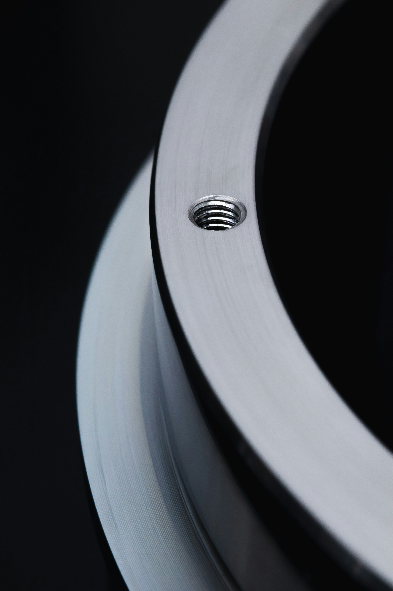
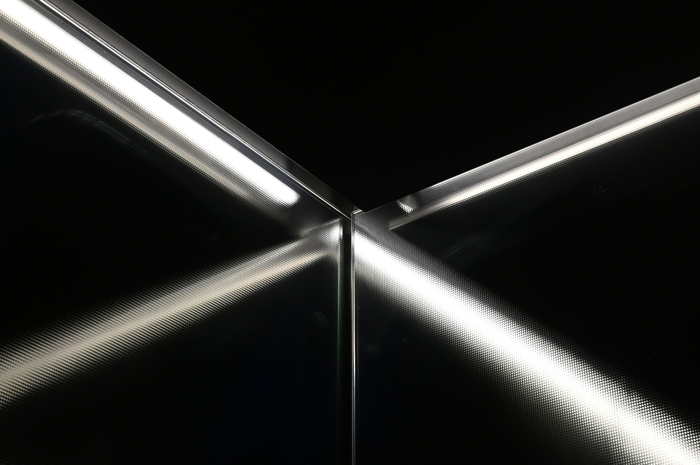
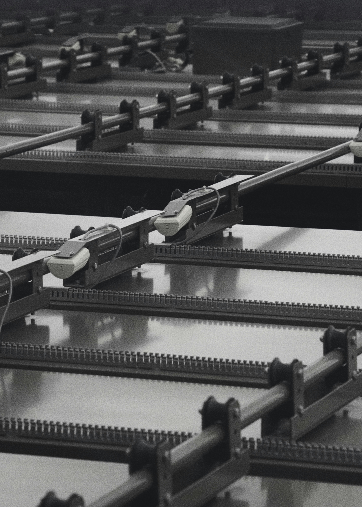
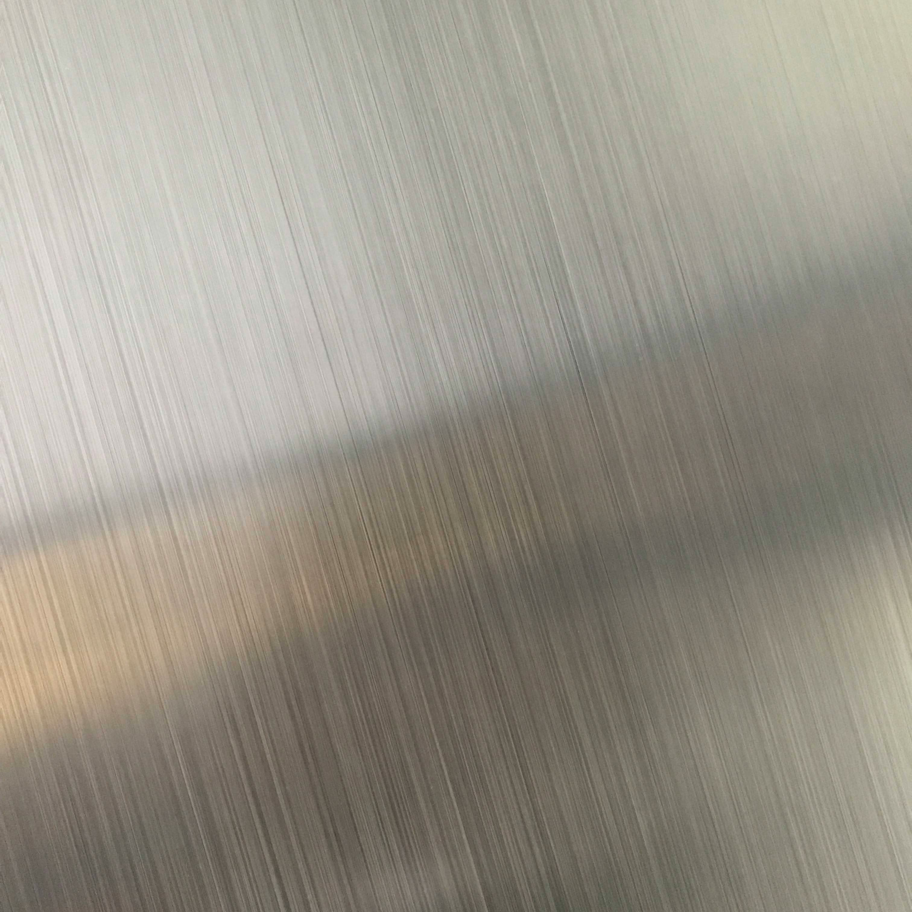
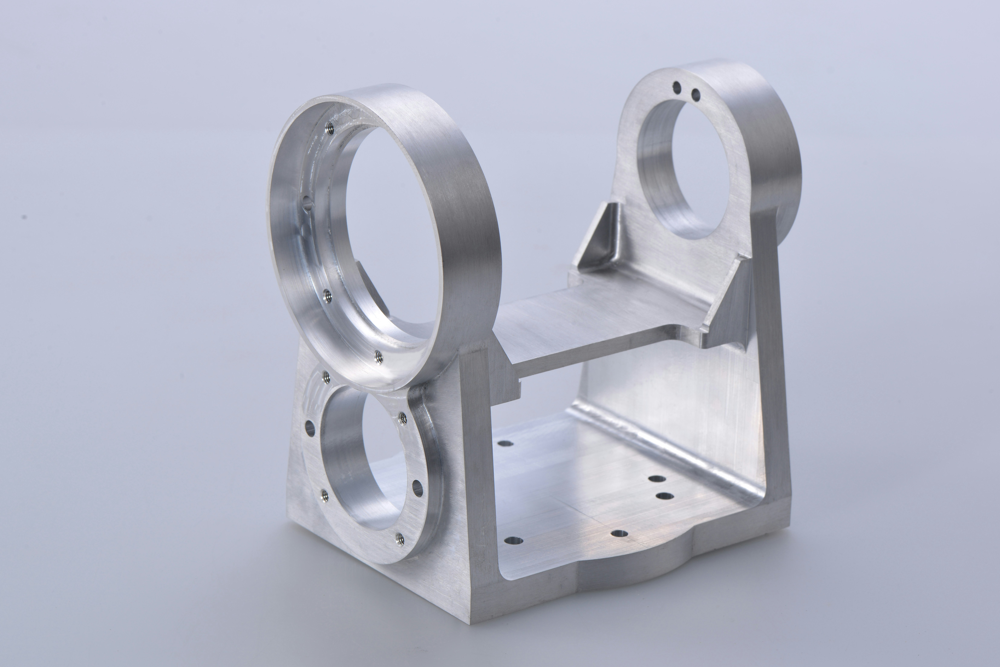
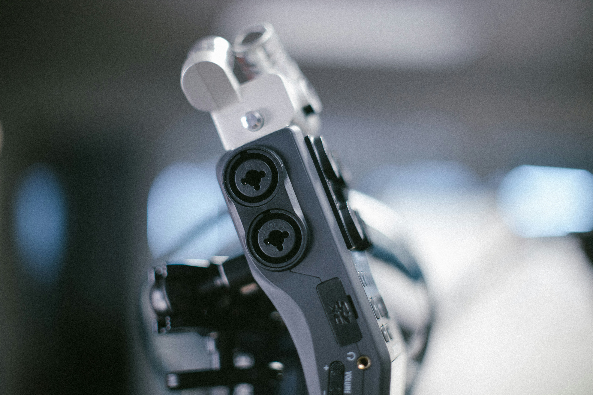
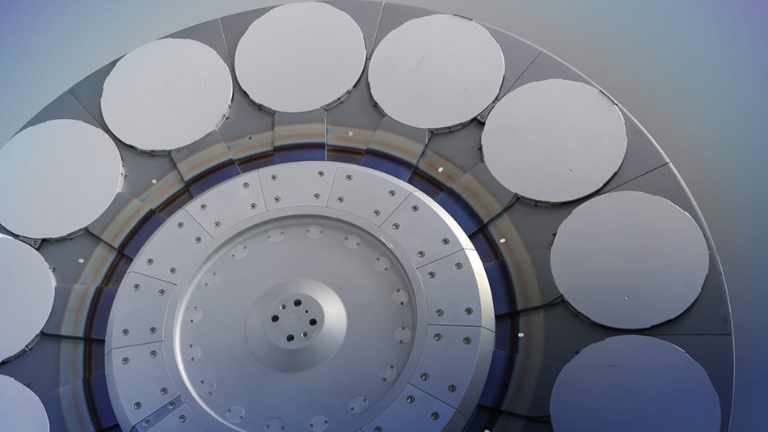
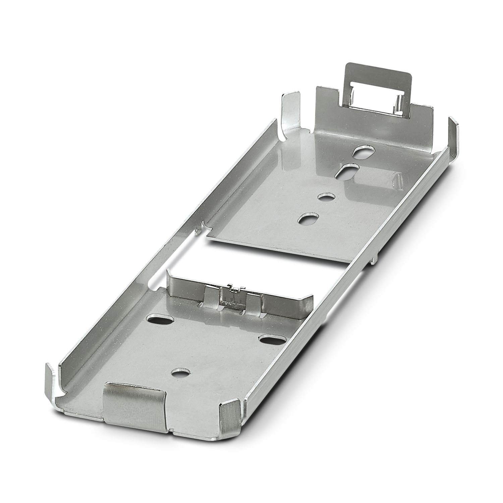

가장 완벽한 금속.
프리식스가 만듭니다.
알루미늄부터 인코넬까지.
모든 소재와 형상을 가공합니다.
3축 CNC 머시닝센터를 이용한 고정밀 황삭·정삭 가공. 복잡한 형상과 좁은 공차도 안정적으로 양산합니다.
Technique

동시 5축 제어로 단일 셋업에서 복잡한 3D 형상을 완성. 재고정 오차를 제거해 최고 수준의 정밀도를 구현합니다.
Technique

프로토타입 제품부터 대량 양산까지. 공정 표준화와 지그 설계로 안정적인 품질을 유지하며 납기를 맞춥니다.
Technique

알로다인, 하드 아노다이징, 전기 도금, 파카라이징 등 소재별 최적 표면 처리를 원스톱으로 제공합니다.
Technique

Our Precision
머리카락 굵기의 10분의 1. 도면에 적힌 숫자가 완성품의 숫자가 되도록, 오차 없는 가공을 가장 중요한 약속으로 삼습니다.
Our Reliability
납기일은 협상의 대상이 아닙니다. 약속한 날짜에, 약속한 품질로. 그 신뢰가 20년간 300개 고객사를 이어온 이유입니다.
Our Technology
DMG MORI 5축 설비와 Zeiss CMM 측정 시스템. 장비에 투자하는 것이 곧 고객에게 투자하는 일이라 믿습니다.
Our Partnership
도면 한 장으로 시작합니다. 소재 선정부터 표면처리까지 함께 고민하고, 고객의 완성품이 세상에 나올 때까지 파트너로 남습니다.
항공우주부터 의료기기까지
— PRECIX가 만든 정밀 부품들

항공기 구조 브래킷

수술 로봇 암 컴포넌트

이온 임플란터 샤프트

위성 마운팅 플레이트
프리식스는 언제나 여러분을 위해 열려 있습니다.
가장 완벽한 금속 공정을 위해 항상 노력합니다.